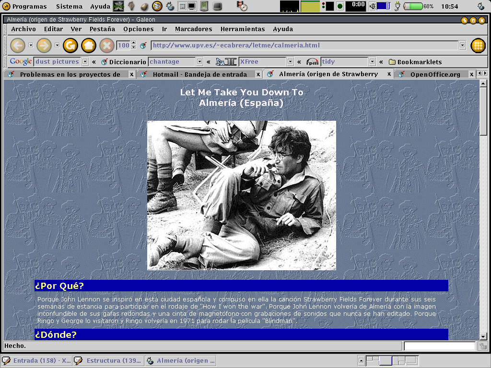
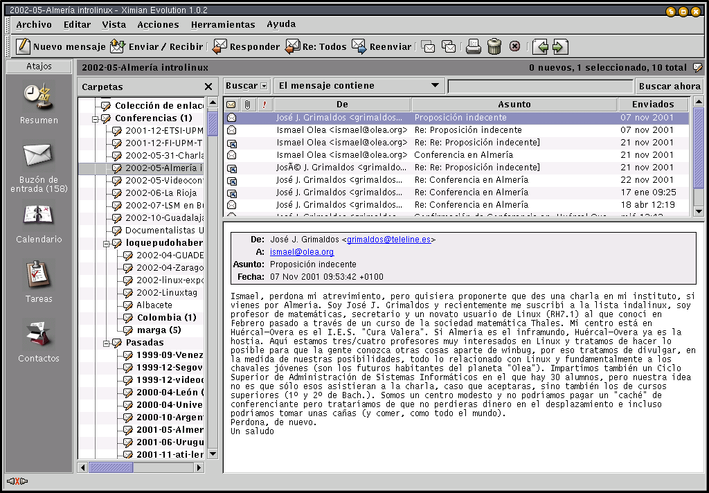
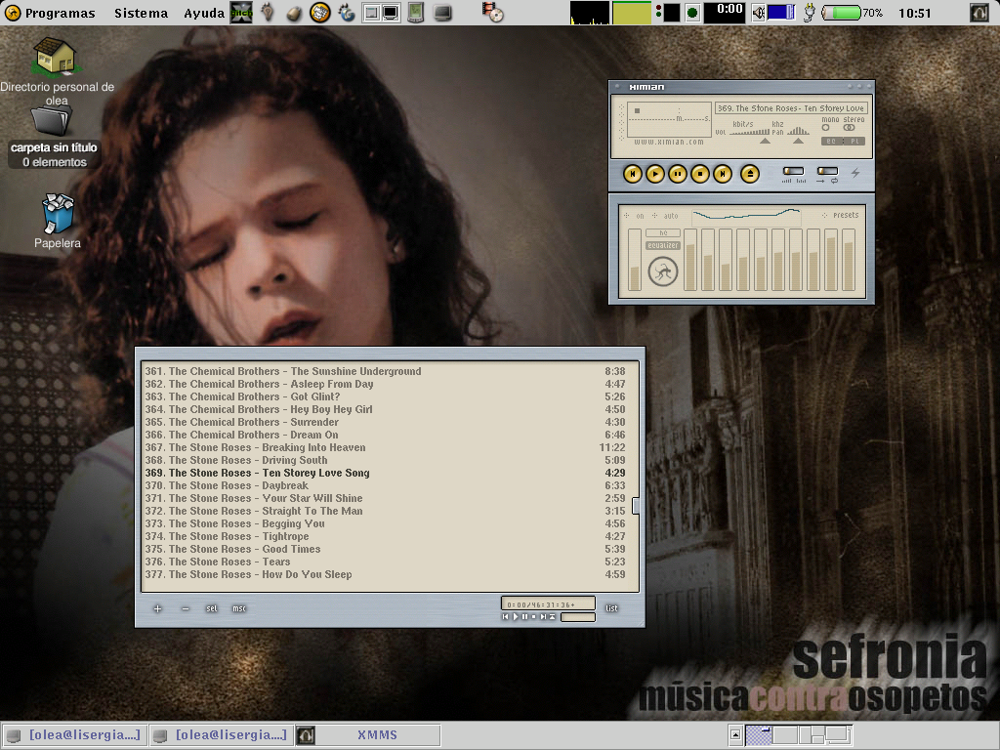
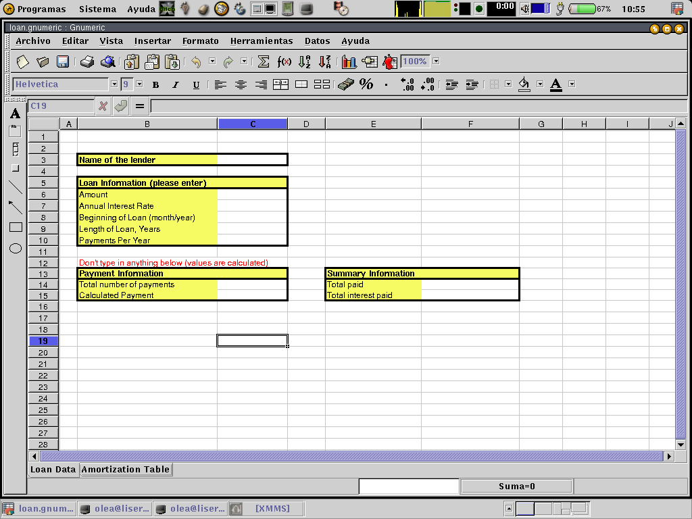
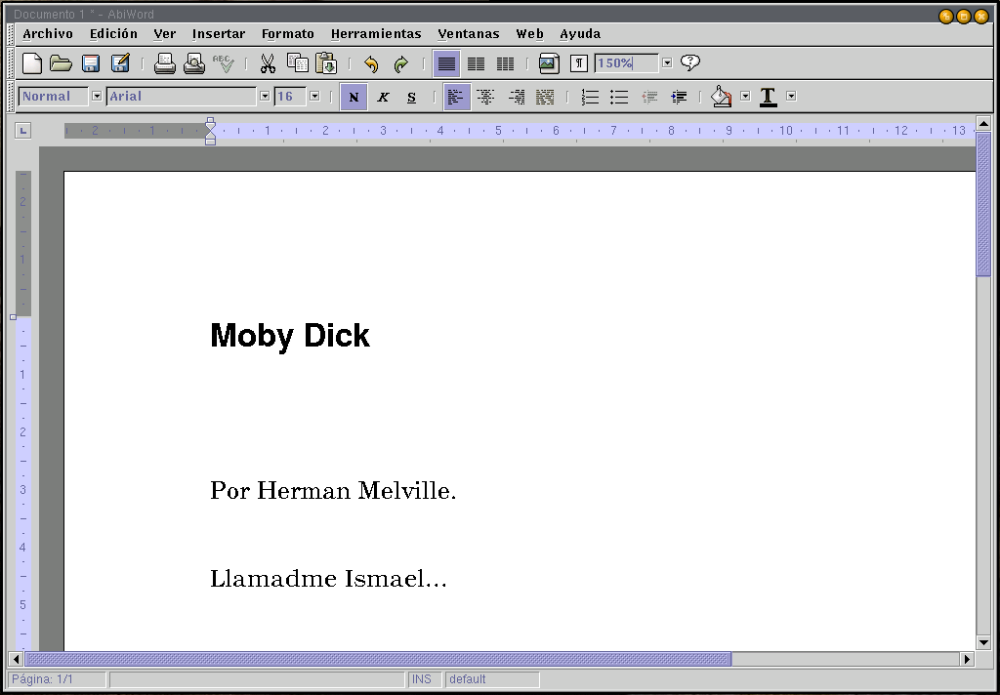
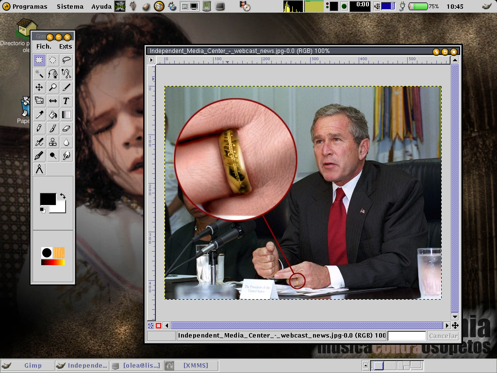
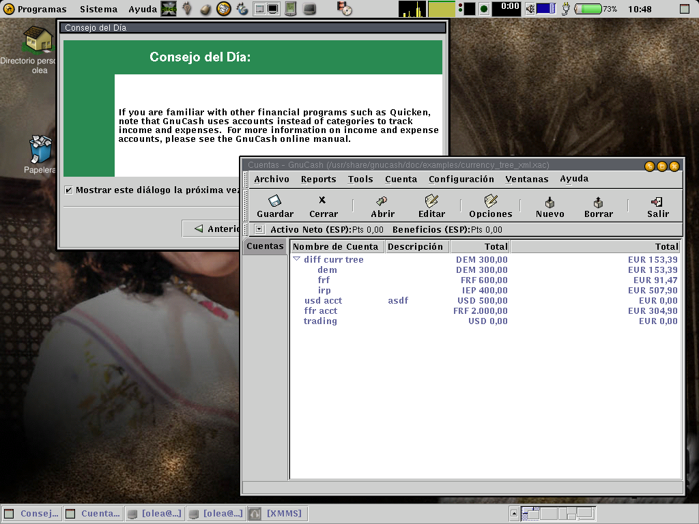

Linux, el sistema operativo libre
Por Ismael Olea <
ismael@olea.org
>
Una conferencia
CACLE
Objetivos
Conocer la plataforma Linux
Conocer los conceptos de libertad del software
Paseo por las herramientas ofimáticas en Linux
¿Qué es software libre?
Quien lo recibe puede:
usarlo como mejor le parezca, donde mejor le parezca.
redistribuirlo a quien quiera, por los medios que quiera.
modificarlo (y mejorarlo o adaptarlo).
redistribuir las modificaciones
Imprescindible: disponibilidad de código fuente.
software libre ≠ software gratis
Breve intro técnica a GNU/Linux
Clon Unix
Núcleo Linux
Familia de aplicaciones GNU + BSD + XFree86 + otro software libre
Deshaciendo mitos equivocados y falsas interpretaciones
Linux no es un sistema operativo.
Linux no ha sido creado por aficionados.
Linux no es Unix.
Linux no es el único núcleo libre: FreeBSD, Hurd, etc.
Está documentado.
Sí se pueden compartir ficheros con usuarios de otros sistemas operativos
Usar Linux no impide usar nuestros ficheros antiguos.
¡Linux está preparado para que ya lo uses!
¿Qué instalamos cuando instalamos Linux?
Concepto de distribución.
Herramientas de escritorio.
Herramientas para servidor.
Otras herramientas.
Alternativas ofimáticas
GNOME
KDE
StarOffice/OpenOffice
Un vistazo al escritorio Gnome
Un pequeño viaje por el escritorio Gnome
Un vistazo al escritorio Gnome: explorador de ficheros
Nautilus
Moderno explorador de ficheros
Integra facilidades web en virtud de Mozilla
Gráficos de muy alta calidad
Integración de la documentación del sistema
Un vistazo al escritorio Gnome: navegador

Galeon
Moderno navegador web
Aprovecha la mejor caja de representación HTML, la de Mozilla
El mejor interfaz de usuario existente
Un vistazo al escritorio Gnome: editor de correo

Evolution
Editor de correo electrónico de última generación
Es la aplicación Gnome más compleja
Absolutamente compatibilidad de formatos
Integra capacidades de trabajo en grupo (agenda, calendario, etc)
Muy fácil de usar
Un vistazo al escritorio Gnome: gestor multimedia

XMMS
Clon del WinAMP
Capacidad de trabajar con varios formatos
Extremadamente modular
Un vistazo al escritorio Gnome: hoja de cálculo

Gnumeric
La hoja de cálculo más potente del software libre
Absolutamente profesional, superior incluso a Excel
Orientada a componentes
Compatible con Excel
Un vistazo al escritorio Gnome: procesador de textos

Abiword
Procesador de textos clon de MS Word
Orientado a componentes
Compatible con los formatos de Word
Un vistazo al escritorio Gnome: retoque fotográfico

The Gimp
Equivalente a Adobe Photoshop
La mejor herramienta de su clase en el software libre
Extremadamente potente
Un vistazo al escritorio Gnome: contabilidad personal

GnuCash
Muy potente
Es tan potente que casi no me veo capaz de decir nada más sobre él :-)
Un vistazo al escritorio Gnome: y muchas más
Mensajería instantánea: gabber, gnomeicu, gaim
Digitalizador de CDA: grip
Cliente irc, ftp, news
Editor de diagramas: dia
Editor de gráficos vectoriales: sodipodi
Herramienta para cámaras digitales: gphoto
Juegos
Y el más poderoso entorno de desarrollo sobre software libre
Actividad de
Hispalinux
promocionando el soft libre
Hispalinux
es el grupo más representativo del mundo del soft libre en España.
Ofrece servicios de apoyo a grupos locales y a proyectos libres
Realiza campañas para el desarrollo del software libre:
sociedad
administración
educación
etc...
Divulgación:
Congreso Hispalinux
CACLE: Circo Ambulante de Conferencias Linuxeras de Educación
Etc...
Te necesitamos como socio y como
activista
:-)
Enlaces importantes
http://indalinux.hispalinux.es
http://www.hispalinux.es
http://lucas.hispalinux.es
http://www.es.gnome.org
http://www.li.org
http://www.tldp.org
http://www.gnome.org
http://www.freshmeat.net